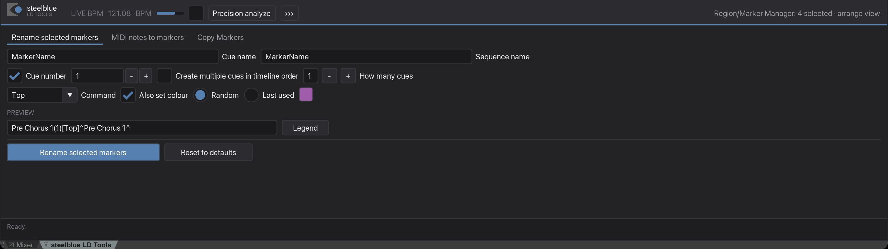
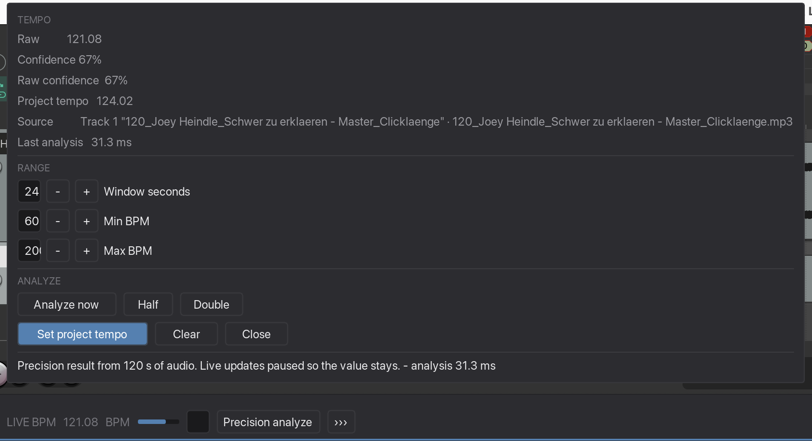
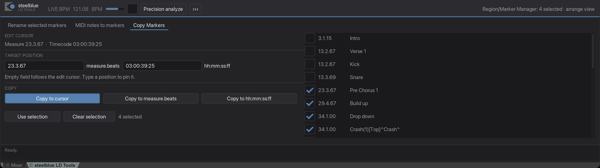

steelblue LD Tools
One window in REAPER's bottom docker that holds the whole set: the live tempo read-out in its header band, and Rename, MIDI and Copy as tabs. It opens with REAPER and stays open.
steelblue_workspace.lua from Actions → Show Action ListWhat it is for
The four plugins each open a window, and each window has to be started, moved out of the way, and started again next time. During programming that is most of the work: you are in the Region/Marker Manager and the arrange the whole evening, and the tool you need is never on screen.
The workspace turns that around. It lives in REAPER's bottom docker, in the same row of tabs as the Mixer, and it is simply always there. The tempo keeps being measured while you rename markers, and the Region/Marker Manager selection is read once and shown at the top, so every tab sees the same thing.
Step by step
-
Find it after the install
It is in the bottom docker. If the docker is closed, open it with View → Show Docker — the workspace is one of the tabs in there, next to the Mixer, under steelblue LD Tools.
It always docks. Drag the docker's top edge to give it the height you want; around 400 px is comfortable.

The header band, the three tabs, and the status line at the bottom. -
Read the header band
On the left, the live BPM of whatever item the analyzer has picked, with its confidence bar next to it. The tick box beside the bar pauses the analysis — the number then stays on the last reading and turns grey, so you can see it is paused rather than broken.
Precision analyze starts the long measurement; the bar becomes its progress while it runs.
›››opens everything else the analyzer can do.On the right, what the Region/Marker Manager currently has selected — the one reading all three tabs work from.
-
Open the analyzer's popup with
›››Raw value, both confidence figures, the project tempo, the Source line naming the item being measured, and when it was last analysed. Then Window seconds, Min BPM, Max BPM, and the buttons: Analyze now, Half, Double, Set project tempo, Clear.
The analyzer's own status line sits at the bottom of the popup — that is where it tells you it has skipped a timecode track. Click anywhere outside the popup to close it.

Everything the header band has no room for. -
Work in the tabs
Three tabs: Rename selected markers, MIDI notes to markers, Copy Markers. Each one is the same tool its own window holds, laid out across the width of the docker instead of stacked.
What you type stays where it is. Switch to another tab and back, and the half-finished cue name is still in its field.

The Copy tab — controls on the left, the marker list on the right. -
Read the status line
One line at the very bottom, and it belongs to the tab that is open. Rename reports how many markers it changed there, Copy how many it copied, MIDI what it created. The other tabs stay quiet.
What is where
| Part | What it holds |
|---|---|
| Header, left | Live BPM, confidence bar, the pause switch, Precision analyze, ››› |
| Header, right | How many markers the Region/Marker Manager has selected, and whether the order is known |
››› popup | Raw, confidence, project tempo, Source, last analysis, window and range, Analyze now, Half, Double, Set project tempo, Clear |
| Tabs | Rename selected markers · MIDI notes to markers · Copy Markers |
| Status line | What the open tab just did |
Good to know
It opens with REAPER, and you can stop that
The installer puts a marked block into __startup.eel in REAPER's own Scripts folder — the file REAPER runs at every start. If you would rather open the window yourself, delete the block between the two // steelblue LD Tools: autostart comment lines. The action stays in the Action List either way.
The action is a switch
Running steelblue_workspace.lua while the window is open closes it. Run it again and it comes back. That is also what the shortcut does, if you assigned one during install.
The four single plugins are unchanged
They are still installed, still have their own actions and their own shortcuts, and still open their own windows. Nothing in the workspace replaces them — use whichever suits the moment. Their guides describe the same controls; only the layout differs.
No Close or Cancel inside a tab
A tab is not a window, so it has no button that would close one. Close the workspace by closing its docker tab, or by running the action again.
The docker slot has only been verified on macOS
The window asks REAPER for the bottom docker by number, and that number has been checked on macOS. It should be the same on Windows and nothing suggests otherwise — but nobody has run it there yet, so if the window turns up somewhere unexpected, that is where to look.
It needs ReaImGui
The workspace is a ReaImGui window, so without that extension it will not start and says so. The four single plugins fall back to plain REAPER dialogs instead, so nobody is left without a way to work.